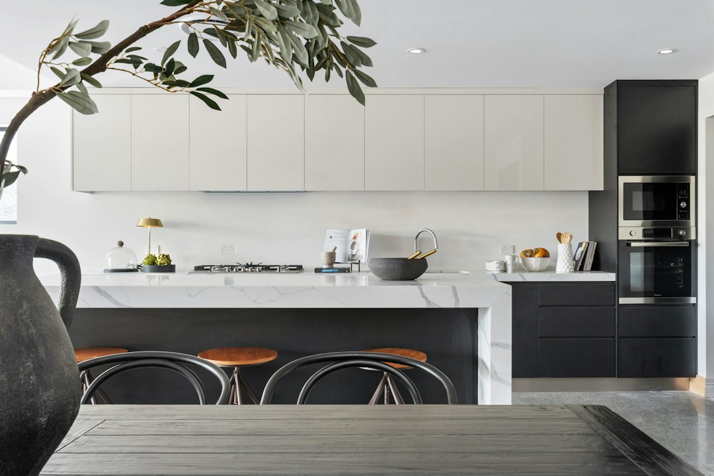

For homeowners comparing kitchen renovations brisbane options, the useful starting point is not style alone, but budget range, layout limits, licence checks, materials, timing and quote clarity.
Kitchen Renovations Brisbane Explained
Kitchen Renovation Brisbane frames the decision around common homeowner problems: outdated rooms, limited storage, inefficient layouts and worn benchtops. That order is useful because finish selection only makes sense after the room's functional limits are clear.
A simple makeover may keep the broad footprint and focus on visible surfaces. A standard renovation usually needs more coordination across cabinets, benchtops, splashbacks, lighting and appliances. A custom project can involve deeper design work, more bespoke storage and a longer schedule. The published timing guide lists 2 to 4 weeks, 4 to 8 weeks and 8 to 12 weeks across those project types.
Before comparing quotes, write down what is genuinely failing. Useful notes include poor corner access, lack of pantry space, insufficient task lighting, bench wear, awkward appliance placement and whether the household needs a more open preparation zone.
Budget signals for the first conversation
The published cost range is broad, typically $15,000 to $60,000+, because a kitchen is a collection of trades, materials and decisions rather than one product. The same guide says budget renovations start from $15,000 to $25,000, mid-range projects cost $30,000 to $60,000, and premium custom kitchens can exceed $40,000 to $80,000+.
Cabinetry is identified as the single largest expense in most projects, accounting for 25 to 40 percent of the total budget. Cabinet design deserves close attention because it affects storage, access, corners and pantry planning every day after handover.
- Ask whether the quote is fixed price and what exclusions remain.
- Confirm whether 3D renders and detailed quotes are included before committing.
- Separate cabinet hardware, benchtop material, splashback choice, electrical work and plumbing work so comparisons are clearer.
- Check whether the proposed design solves the original storage and layout problems.
Materials, storage and daily use
The published guide highlights bespoke cabinetry, walk-in pantry designs, corner solutions, overhead storage and pull-out systems. Those details matter in Brisbane homes where smaller kitchen footprints are named as a common design challenge. The practical question is how much usable storage is gained without making the room harder to move through.
Benchtop selection also needs a current materials conversation. The guide says traditional engineered quartz is now banned due to silicosis concerns and points to silica-free stone alternatives, laminate and porcelain surfaces, including silica-free Mineral ranges from Caesarstone. Treat that as a quote question: what material is proposed, why is it suitable, and what care expectations come with it?
Lighting should be specified in functional layers. Under-cabinet lighting supports preparation areas, pendant fittings can define an island or dining edge, and task lighting should match where cutting, cooking and cleaning happen. Appliance integration should be planned at the same time so cabinet layout, power points and workflow are coordinated.
Who this applies to
This guide is most useful for Brisbane homeowners who know their kitchen is not working but have not decided whether the answer is a refresh, a standard renovation or a fully custom project. It also suits owners preparing a property for resale who want to understand why the kitchen receives so much attention from buyers.
The published material says Brisbane median house prices reached $1.08 million with 10.2 percent annual growth, and that real estate agents rank the kitchen as the most important room for resale value, with 80 percent of buyers placing it in their top three priorities. It also states metro Brisbane kitchen renovations typically deliver 60 to 80 percent return on investment. Those figures support careful planning, not automatic overspending.
For a related planning angle, this kitchen reno brisbane planning guide can sit beside the quote checklist when comparing scope and inclusions.
Licence and workmanship checks
Queensland renovation planning should include licence checks when building work crosses the threshold stated in the published material. It says listed specialists hold current QBCC licences, required for building work over $3,300 in Queensland, with proper insurance, accountability and recourse through the state's building regulator.
The same material says licensed plumbers and electricians are required by Queensland law. For a kitchen, plumbing, power, lighting and appliance integration should be treated as coordinated trade work. Ask who sequences those trades and how delays or variations are approved.
Workmanship evidence should be practical. The guide refers to Blum certified installers, soft-close mechanisms, warranty on workmanship and clear communication. Useful questions include what hardware is specified, what warranty applies, who documents changes, and when final defects are inspected before handover.
- Define the problem. List the storage, layout, lighting, surface and appliance issues before choosing finishes.
- Set a scope band. Decide whether the project is closer to a makeover, standard renovation or custom kitchen.
- Check licence needs. Ask how QBCC licensing and licensed plumbing or electrical work apply to the proposed job.
- Compare inclusions. Review cabinetry, benchtops, splashbacks, lighting, appliance integration, renders, warranty and exclusions line by line.
- Confirm timing. Match the quoted schedule to the published 2 to 12 week range by project type.
| Project type | Best fit | Checks before quoting |
|---|---|---|
| Makeover | A kitchen with a workable layout but tired surfaces | Confirm which cabinets, benchtops, splashbacks and lighting stay or change |
| Standard renovation | A room needing storage, material and workflow improvements | Ask for itemised inclusions, trade sequencing and a fixed-price quote |
| Custom project | A kitchen needing bespoke cabinetry, pantry planning or a major design reset | Request design consultation, 3D renders, material choices and timeline assumptions |
This guide covers Brisbane kitchen planning, scope, budgets, timing, materials, licence checks and quote questions.